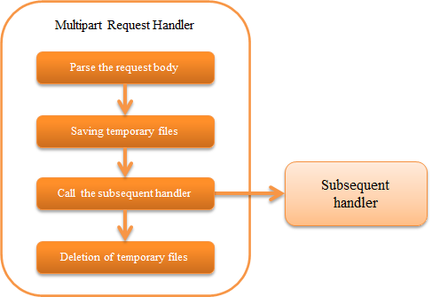

6.2.9. Multipart Request Handler¶
Table of contents
- Handler class name
- Module list
- Constraints
- Operating conditions of this handler
- Specify the temporary storage location for upload files
- Prevent uploading of large files
- Delete (clean) temporary files
- Configure the transition destination screen for multipart parsing error and file size upper limit are exceeded
- Read the upload file
This handler parses the body part and saves the uploaded file as a temporary file when the HTTP request is in the multipart format.
This handler performs the following processes.
- Parses multi-part requests
- Saves upload files as temporary files
- Deletes saved temporary files
The process flow is as follows.
6.2.9.2. Module list¶
<dependency>
<groupId>com.nablarch.framework</groupId>
<artifactId>nablarch-fw-web</artifactId>
</dependency>
<!-- Only when specifying the temporary storage location -->
<dependency>
<groupId>com.nablarch.framework</groupId>
<artifactId>nablarch-core</artifactId>
</dependency>
6.2.9.3. Constraints¶
None.
6.2.9.4. Operating conditions of this handler¶
This handler parses the request body only for multipart requests. Whether the request is in a multipart format is determined based on the Content-Type of the request header.
When the Content-Type matches the multipart/form-data, the request is determined to be in multipart format and the body is parsed.
In case of other requests, this handler does nothing and delegates processing to the subsequent handlers.
6.2.9.5. Specify the temporary storage location for upload files¶
Configure the temporary storage directory for upload file in File path management.
If the temporary storage destination directory is not specified in file path management, the value of system property java.io.tmpdir is used as the default storage destination.
Below is a configuration example for the destination directory for temporary files.
- Point
- The logical name of the storage destination directory should be
uploadFileTmpDir.
- The logical name of the storage destination directory should be
<component name="filePathSetting" class="nablarch.core.util.FilePathSetting">
<!-- Configuration of directory-->
<property name="basePathSettings">
<map>
<!-- Temporary storage directory for the upload file -->
<entry key="uploadFileTmpDir" value="file:/var/nablarch/uploadTmpDir" />
</map>
</property>
</component>
Tip
In the above example, the storage destination directory is specified directly, but this value will change depending on the environment. Therefore, it is recommended that the directory be configured in the environment configuration file instead of configuring the directory directly in the component configuration file.
For details, see Set the dependent value.
6.2.9.6. Prevent uploading of large files¶
If a large file is uploaded, the system may not operate normally due to insufficient disc space. Therefore, this handler returns 400 (Bad Request) to the client when the maximum upload size is exceeded.
The upper limit of upload size is configured in bytes. If the value is not configured, there is no limit to the upload size.
A configuration example for the upload size is shown below.
<component class="nablarch.fw.web.upload.MultipartHandler" name="multipartHandler">
<property name="uploadSettings">
<component class="nablarch.fw.web.upload.UploadSettings">
<!-- Upload size (Content-Length) upper limit (about 10M) -->
<property name="contentLengthLimit" value="1000000" />
</component>
</property>
</component>
Tip
The upper limit of the upload size is not for a file, but for one request.
Therefore, when multiple files are uploaded, the upper limit check is based on the total of the file sizes (strictly speaking, by Content-Length).
If the size of each file is to be checked, implement the check in the action.
6.2.9.7. Delete (clean) temporary files¶
Clean the upload files based on the following conditions.
- If an exception occurs while parsing of the body is in progress
- When automatic deletion configuration is enabled on the return path of the handler
The automatic deletion configuration is enabled by default. Note that if this setting is disabled in the production environment, a large number of temporary files will remain on the disk, and may cause the disk to become full in the worst case.
To invalidate the configuration value, configure UploadSettings#autoCleaning to false.
6.2.9.8. Configure the transition destination screen for multipart parsing error and file size upper limit are exceeded¶
This handler returns 400(BadRequest) to the client, when multipart parsing error [1] or file size exceeds the upper limit is encountered.
Therefore, the error page corresponding to 400(BadRequest) must be configured in web.xml. If the error page is not configured in web.xml, the default page of web application server is returned to the client.
Important
This handler must be configured before the Session Variable Store Handler as described in Constraints. Therefore, Configuration of the default page of the HTTP Error Control Handler, configured after the Session Variable Store Handler cannot be used.
| [1] | Case of multipart parsing error
|
6.2.9.9. Read the upload file¶
The uploaded file (temporarily saved file) is acquired from HttpRequest.
An implementation example is shown below.
- Point
- The upload file is acquired by calling HttpRequest#getPart.
- The parameter name is specified in the argument of HttpRequest#getPart.
public HttpResponse upload(HttpRequest request, ExecutionContext context) throws IOException {
// Acquire the uploaded file
List<PartInfo> partInfoList = request.getPart("uploadFile");
if (partInfoList.isEmpty()) {
// Business error if the uploaded file is not specified
}
// Process the uploaded file
InputStream file = partInfoList.get(0).getInputStream()
// The read process of the uploaded file is performed below.
}
For the detailed implementation method to process the upload file, refer to the following document. As described in Access to Data in Various Formats, Data Bind is recommended. (If the format cannot be handled by Data Bind, use General Data Format.)
Tip
If the uploaded file is a binary file such as an image file, use the binary data that has been read for processing.
If the file is Java8, the byte data of the uploaded file can be read with the following implementation.
File savedFile = partInfo.getSavedFile();
try {
byte[] bytes = Files.readAllBytes(savedFile.toPath());
} catch (IOException e) {
throw new RuntimeException(e);
}